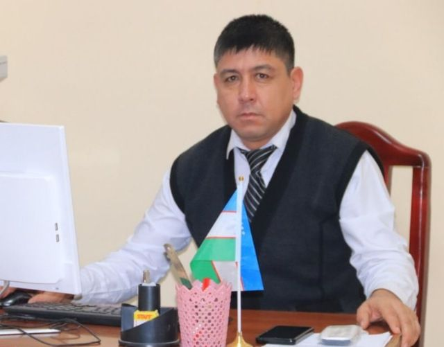

Sariboyev Nurali Abdunazarovich
Guliston davlat pedagogika instituti
Pedagogika va psixologiya kafedrasi o'qituvchisi
Pedagogika va psixologiya kafedrasi o'qituvchisi
20
Yillik umumiy ish staji
18
Yillik pedagogik staj
4+
OAK jurnallarida maqola
6
Ilmiy tezislar
Shaxsiy ma'lumotlar
| Ism-familiya | Sariboyev Nurali Abdunazarovich |
| Ma'lumoti | Oliy (Magistratura) |
| Tamomlagan | Guliston davlat universiteti, 2023 yil |
| Mutaxassislik | Pedagogika va psixologiya |
| Ixtisoslik | 13.00.02 — Ta'lim va tarbiya nazariyasi va metodikasi (pedagogika fanlari) |
Kasbiy faoliyat
| Ish joyi | Guliston davlat pedagogika instituti |
| Kafedra | Pedagogika va psixologiya kafedrasi |
| Lavozim | O'qituvchi |
| Umumiy staj | 20 yil |
| Ped. staj | 18 yil |
Ilmiy va uslubiy ishlar
1
Hammuallif sifatida 1 ta darslik nashr etilgan — «Kreativ pedagogika» fani bo'yicha.
4+
4 tadan ortiq OAK jurnallarida ilmiy maqolalar muallifi.
6
6 ta ilmiy tezis muallifi — xalqaro va respublika ilmiy-amaliy konferensiyalarda e'lon qilingan.
🎓
Ixtisoslik sohasi: 13.00.02 — Ta'lim va tarbiya nazariyasi va metodikasi (pedagogika fanlari) bo'yicha ilmiy izlanishlar olib bormoqda.
Ushbu platforma uchun qilingan ishlar
📊
7 ta taqdimot muallifi — kreativ pedagogika fanining asosiy mavzulari bo'yicha.
📚
14 ta ma'ruza matni, 15 ta amaliy mashg'ulot materiallari va 60 ta mustaqil ish mavzusi ishlab chiqilgan.
🎯
Talabalar uchun test topshiriqlari tizimi va innovatsion ta'lim usullari joriy etilgan.